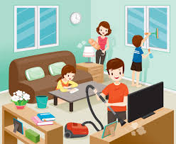

Juego
Aveces en mi tiempo libre me pongo a jugar cualquier juego virtual o de mesa
Ver televisión
tambien en mi tiempo libre veo television para estar informado sobre la situacion que estamos padeciendo

leer
Además de ser educativo, me pongo a leer para despejar la mente de todo lo que esta pasando en la actualidad
Estudiar
tambien me pongo a repasar mucho para cuando volvamos de regreso no vaya despistado de todos los temas, y me pueda ir bien